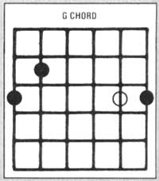

TRY SOME SLIDE GUITAR!
PHOTO BY BRENT THORGREN
Marc Bristol-a homegrown musician who performs regularly throughout the Pacific Northwest-began sharing his knowledge of do-it-yourself entertainment with MOTHER-readers back in issue 50. Marc's columns have touched on everything from access information for recorded music to detailed instructions on how to make your own instruments. Marc is interested in hearing any suggestions, comments, or questions you may have about the subject of do-it-yourself music, and he'll try to write about requested topics in future columns. Address your correspondence-for this column and this column only-to Marc Bristol, Dept. TMEN, 18520 312th Avenue, N.E., Duvall, Washington 98019.
Not long after I took up playing the guitar, I was given an old musical instrument that had weathered more than a few years in a corner of my grandfather's shed. It was a guitar designed to be played on the lap . . . using a steel bar to chord the strings. Well, never having seen such a thing before, I quickly attempted to play a few songs on it in "normal" guitar fashion . . . and ended up highly frustrated. Later I learned that many of my pickin' friends had had similar experiences.
However, I soon discovered that my peculiar acquisition was actually a "Hawaiian guitar" ... a type of instrument that had been tremendously popular back in the 20's and 30's. As a result of that fad, thousands of "lap guitars", as they came to be called, were sold all across the North American continent . . . and many of them can still be found today, primarily in secondhand stores and thrift shops.
THE HAWAIIAN INFLUENCE
According to legend, a man by the name of Joseph Kekuku invented the lap guitar quite unintentionally. The Hawaiian had been humming through a comb and tissue paper kazoo one day while his guitar rested on his lap. The comb slipped from his hand onto the strings of his instrument . . . and Joseph was delighted by the sound it made.
Although the Hawaiian people have long possessed a great musical tradition, its focus-up to that time-had been on vocals ... often with some drum and seashell accompaniment. Guitars, however, had been brought to Hawaii by Mexican and Portuguese settlers . . . and, with Kekuku's discovery to inspire them (and the later development of the technique to instruct them), the islanders soon took to tuning those instruments to an "open" or "sung" chord. This style of tuning-which is known as slack key because some strings are turned down from the standard tension to achieve the open chord-simplified both the chording process and the task of tuning by ear. When a guitar is tuned to an open chord, you see, a person can simply lay one finger straight across the fret board to achieve a major chord. This allows the player to slide a steel bar up and down the neck of the instrument to create different chords and sliding notes . . . resulting in sounds that remind many folks of palm trees swaying in a tropical breeze!
The new Hawaiian guitar eventually supplanted the musical saw in most of the dance orchestras of the 20's . . . and later its sound, as produced by the pedal steel guitar, went on to become a trademark of modern country music.
AN EVOLUTION OF SOUNDS
The original lap players used ordinary guitars that had been modified by the addition of a raised nut, to keep the strings higher off the frets. These "pioneers" employed all sorts of items-including metal combs, pocketknives, and flat metal strips of steel or brass-to chord their instruments. After World War I, however, American companies began manufacturing special lap guitars with hollow necks. (The idea was that the extra open space would improve the sound.) Shortly thereafter, the Dopera brothers introduced the "dobro" guitar, an instrument which incorporated an inverted metal cone much like that found on a loudspeaker. The dobro produced a loud, distinctive sound and sustained notes much longer than could ordinary wooden guitars. Some of these resonator guitars (eventually they were manufactured by other companies using different names) were made almost entirely-except for the neck and bridge-of metal.
Now it just so happened that the introduction of the Hawaiian steel guitar (or dobro) style coincided with a number of technological breakthroughs in the recording industry . . . and the combination contributed to a musical craze that swept the nation. Jimmie Rodgers-known to many as the "father of country music"-used a dobro player in many of his recordings, and his yodeling and slide guitar sound soon found their way into the dance band music of Texas and Oklahoma . . . which eventually became known as western swing.
Leon McAuliffe, a steel player for Bob Wills and the Texas Playboys, began his professional career with a dobro . . . but later switched to the electric steel guitar that was developed in the 30's. The Hawaiian music fad began to slow down in the 40's, but by then the steel guitar sound had a strong foothold in country music, with men like Brother Oswald (in Roy Acuff’s band) and Jimmie Helms (in the Hank Williams group) heavily influenced by the Hawaiian guitar virtuosos.
STEP BACK IN TIME
It's not my intention, though, to use this column to promote the now popular pedal steel guitar. Instead, I'd like to convince a few of you to try pickin' on lap guitars, just for fun. In my opinion the world needs more dobro players and slide guitar players of all kinds. Here's how to get started:
First (of course) find an old lap guitar (check out "junk" stores and basement or garage sales). Or you might, instead, use a standard guitar that has a warped neck . . . or that is, for some other reason, less than perfect for ordinary playing. In the latter case you'll need to purchase a nut raiser . . . or make a higher nut that has a flat top. You'll want the surface of the string plane as flat as possible, too, though many steel-string guitars (don't use nylon strings for slide playing) have arched fret boards with strings arranged over them.
There are two sorts of "ready-made" bars available commercially for use with a slide guitar. One, called a bullet bar, is simply a heavy steel cylinder with a rounded end. The other type, known as the Stevens bar, has indentations on each side and on top, which make it easier to hang on to. (Of course, if you've already located a suitable guitar, you don't need to visit the music store before trying your hand at slide playing. As I mentioned before, early players used pocketknives, metal combs, the handles from kitchen cutlery-and assorted other objects-as bars.)
NOTABLE NOTES
Most dobro players favor an open G tuning that goes like this: G B D G B D. These are the same notes you get when fingering a G chord in standard tuning (as in the accompanying illustration) except for the first (highest) string. The high D note is found at the third fret, second string. Actually this G tuning was modified from an earlier tuning of D G D G B D. The two lower strings in the latter arrangement were raised to create the parallel situation between the bottom three and the top three strings in the GBD/GBD tuning.
The original slack-key system also allowed a D tuning. In this one-D A D F# A D-all but the fourth and fifth strings are lowered . . . and heavier strings may be necessary. A parallel tuning can be accomplished in D, too, which would change it to F# A D F# A D. In this manner you can play the same passage high or low without changing positions, which can come in very handy.
If you should happen to find an old Hawaiian guitar book in a used book shop or a secondhand store, a few of the commonly used tunings will probably be given in the opening pages. Such original tunings often produce a better sound when raised a whole step. That results, for example, in an A tuning of E A E A C# E, and an E tuning of E B E G# B E. Those of you who'd like to get a bit fancier may want to try these three additional tunings: (E7) B D E G# B E, (C#M7) E B E G# C# E, or (C6) C G E A C E. (In all cases the tunings are listed starting with the sixth-or lowest-string.)
Most Hawaiian guitar and dobro musicians fingerpick, using picks on the thumb and two fingers. Some guitarists-Tut Taylor, for example-flatpick in lap style, while I fingerpick, using three fingers and my thumb (an adaptation from my regular guitar-playing style). I suggest you use whatever technique works best for you.
You'll also want to experiment with the various tunings I've given you and any others you find or invent. Many players do use more than one, either by simply retuning or by having a second instrument on hand. Keep in mind that if you've converted a standard guitar into a "slider", it's important to keep an eye on the amount of tension you put on the instrument when tightening the strings. (Of course, assuming that you use a guitar built for steel strings, most potential problems can be avoided with proper string gauging.)
AND THAT'S NOT ALL
There've been several other developments in slide guitar performance, too. Blues players in the Mississippi Delta, for instance, were among those who picked up the Hawaiian technique and incorporated it into their music. Soon these folks began using the top third of a long-necked bottle as a slide bar-by slipping it over a finger-while holding the guitar in normal fashion ... a style that became known as bottleneck guitar.
If you'd like to try this technique, commercially produced glass and steel bottleneck slides are available, but of course it's possible to manufacture your own from any of a variety of materials. Look for a bottle with a long, straight-sided neck . . . then sever the neck by scoring it with a triangular file along a line at the desired length and tapping it firmly just below that line. (Naturally, a bottle cutter would also do the trick.) Grind all sharp edges down. Be certain to wear safety goggles any time you work with glass.
If your toolbox houses a wrench with a deep socket that fits your little finger, that tool can provide a good ready-made substitute for a bottleneck ... in fact, any kind of metal tubing-particularly stainless steel or hard brass-can be used to produce a solid, hefty sound.
ACCESS HAWAIIAN STYLE
Many different kinds of instructional materials are available for the various slide guitar styles. Kicking Mule (Dept. TMEN, P.O. Box 158, Alderpoint, California 95411), the record company I featured in No. 74, has several album/book combinations that deal with slide blues styles.
Furthermore, a good text on dobro and Hawaiian style. The Dobro Book by Stacy Phillips, is available from Oak Publications, Dept. TMEN, 33 West 60th Street, New York, New York 10023. ( The Dobro Book includes an instructional record.) I would expect Oak to have other choices as well, so you might want to write and request a free catalog.
Frets magazine runs a regular column by Mike Auldridge-dobroist extraordinaire -and Frets has a sister publication called Guitar Player, which contains Rusty Young's column on pedal steel playing. Write to both publications at Dept. TMEN, P.O. Box 28836, San Diego, California 92127.
I've also come across several albums featuring slide guitar that'd be good additions to anyone's collection: Steel Guitar Classics (Old Timey, Dept. TMEN, 10341 San Pablo Avenue, El Cerrito, California 94530), Hawaiian Guitar Hotshots (Yazoo, Dept. TMEN, 245 Waverly Place, New York, New York 10014), Robert Gear-Steel Guitar and Dobro (Physical Records, Dept. TMEN, 186 Willow Avenue, Somerville, Massachusetts 02144), and Hula Blues (Rounder Records, at the same address as Physical).
WHY NOT TRY IT?
I hope I've inspired you to at least give this unusual form of old-time guitar pickin' a try. Beginners can take encouragement from the fact that "sliding" is much easier to master than playing fret chords. You'll also find that picking along with someone else-even if that "someone" is on the radio or a record-will speed up your learning.
EDITOR'S NOTE: Music-lovers interested in buying new or used slide guitars might want to contact the folks at Elderly Instruments (Dept. TMEN, 541 East Grand River Avenue, P.O. Box 1795, East Lansing, Michigan 48823) and request their free catalog. This outfit also offers the following books: Country and Bluegrass Dobro, a two-volume set by Beverly King. . . Dobro Fiddle Tunes and Breakdowns by Stacy Phillips . . . and Country Dobro Guitar Styles by Ken Edison and Tom Swatzell.
|
|
 |
|